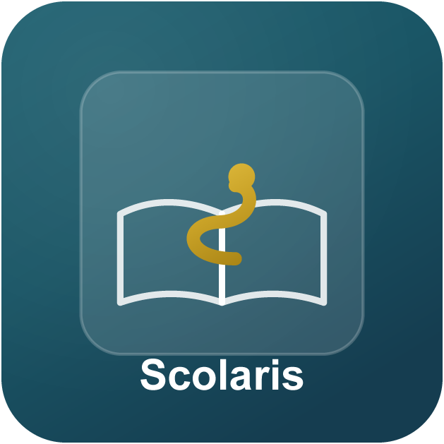
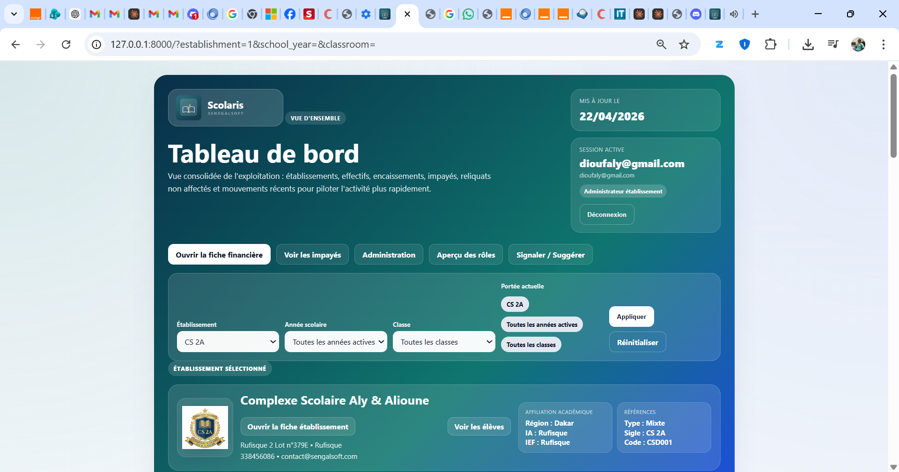
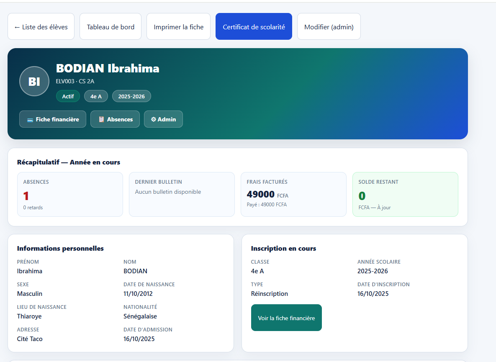
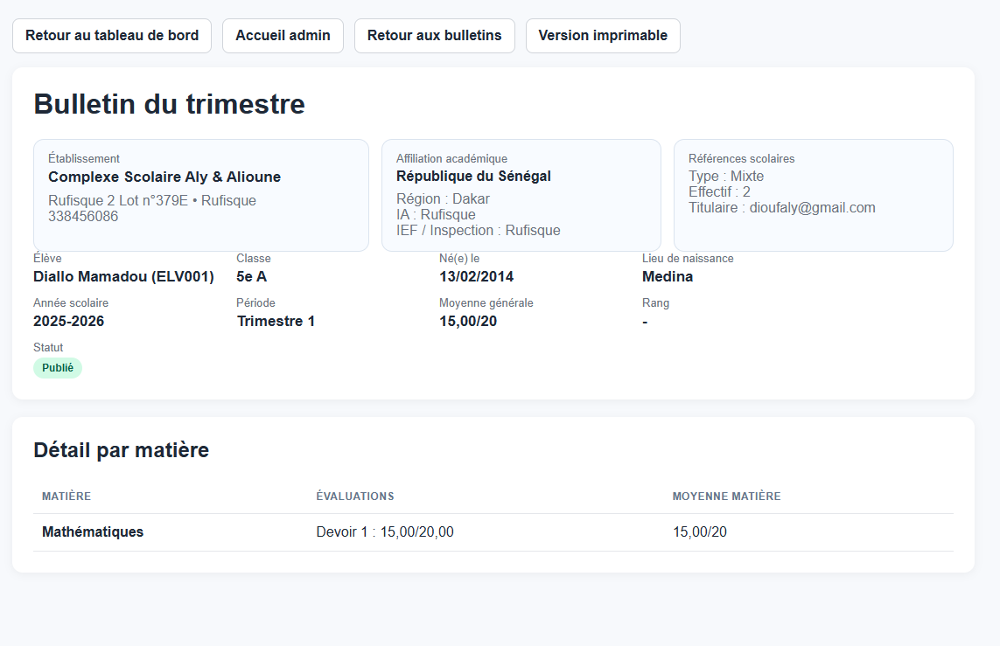
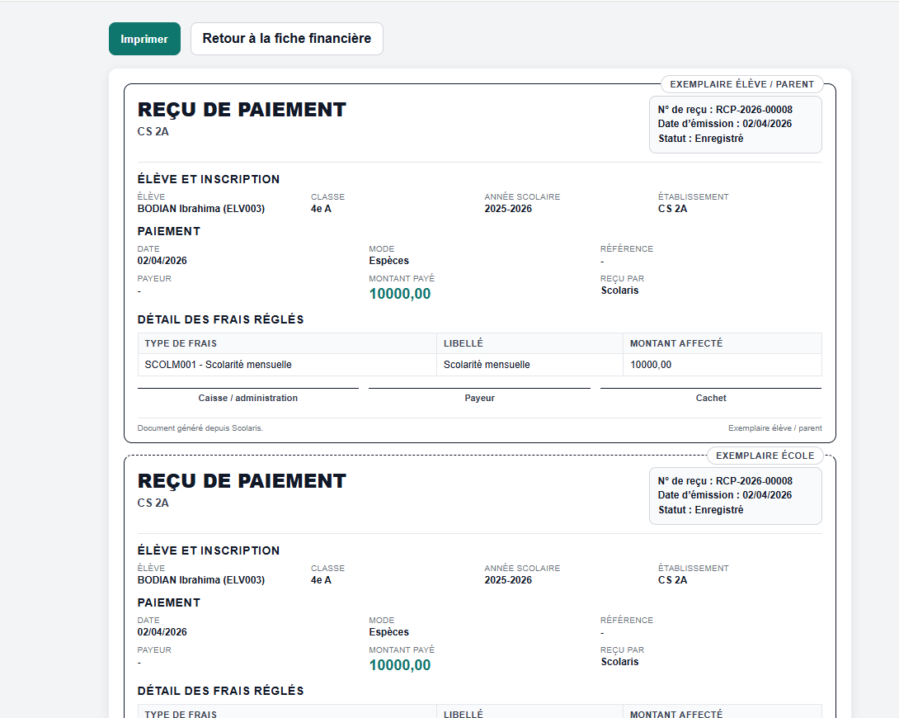

Dossier de candidature · POESAM 2026

SCOLARIS
La gestion scolaire numérique
pour les écoles privées sénégalaises
Co-fondatrice
Sophie DIOP
Structure
Groupe Senegalsoft
Prix Orange de l'Entrepreneur Social en Afrique et Moyen-Orient · POESAM 2026
🌐 scolaris-gamma.vercel.app
📺 youtube.com/@scolaris_senegal
💼 linkedin.com/company/scolaris-senegal
📘 facebook.com/ScolarisSenegal
1
Résumé synthétique du projet
Au Sénégal, plus de 3 000 écoles privées scolarisent une part croissante des élèves, notamment dans les zones urbaines de Dakar, Rufisque et Pikine. Pourtant, la grande majorité de ces établissements gèrent encore leurs activités administratives et pédagogiques de façon entièrement manuelle : registres papier, carnets de notes manuscrits, reçus de paiement non sécurisés, et absence de communication structurée avec les parents.
Cette réalité engendre des pertes d'informations, des erreurs administratives fréquentes, une opacité financière et un sentiment d'exclusion des parents — notamment des mères — du suivi scolaire de leurs enfants.
Scolaris est une plateforme numérique de gestion scolaire développée en 2025 par le Groupe Senegalsoft, conçue spécifiquement pour les établissements privés sénégalais. Accessible sur ordinateur et smartphone, elle offre une solution complète, abordable et adaptée aux réalités locales, incluant le support des écoles franco-arabes et bilingues.
Deux établissements pilotes valident déjà son efficacité : l'école primaire franco-arabe El Hadji Ibrahima NIASS et l'École Vision Bilingue. L'objectif est d'atteindre 20 écoles en 2027 et 40 écoles en 2028, avant une expansion régionale en Afrique de l'Ouest francophone.
3 000+
Écoles privées au Sénégal
Pourquoi maintenant ?
Le Sénégal connaît une accélération unique : généralisation du smartphone dans les écoles, politique nationale de digitalisation portée par l'État, et croissance de 40% des effectifs privés en 10 ans. Aucune solution locale n'occupe ce créneau. Les acteurs internationaux sont inadaptés. La fenêtre est ouverte — pour 18 à 24 mois.
Segmentation du marché
| Segment |
Profil |
Potentiel |
| Écoles franco-arabes |
Forte croissance dans la banlieue dakaroise, besoin de support arabe/français |
Élevé ★★★★ |
| Écoles bilingues privées laïques |
Clientèle aisée, sensible à la qualité et au numérique |
Très élevé ★★★★★ |
| Écoles privées catholiques |
Bien organisées, informatisation partielle existante |
Moyen ★★★ |
| Écoles communautaires |
Budget limité, besoin fort de structuration |
À terme ★★ |
Marché cible immédiat : région de Dakar (Dakar, Rufisque, Pikine, Guédiawaye) — estimation : 800 à 1 200 établissements éligibles.
Analyse SWOT
Forces
- Solution locale, adaptée au contexte sénégalais
- Prototype opérationnel avec 2 écoles pilotes
- Fondateur avec double expertise IT et gestion
- Accessibilité mobile, interface simple
- Support franco-arabe, adapté au marché
Faiblesses
- Équipe technique réduite à ce stade
- Notoriété encore limitée
- Absence de financement externe à ce jour
- Couverture géographique initiale limitée à Dakar
Opportunités
- Digitalisation croissante du secteur éducatif
- Politique publique de numérisation de l'éducation
- Programmes DER/FJ et Délégation Entrepreneuriat Rapide
- Levées EdTech africaine (Norrsken, AfricInvest, Partech Africa)
- Expansion possible vers les pays francophones voisins
Menaces
- Concurrents internationaux aux grands moyens
- Résistance au changement dans certains établissements
- Instabilité de la connexion internet dans certaines zones
- Risque de pression tarifaire si nouveaux entrants locaux
Concurrence
| Concurrent |
Origine |
Faiblesse face à Scolaris |
| SchoolMaster |
International |
Coût élevé, non adapté aux franco-arabes, pas de support local |
| EduTech Africa (Nigeria) |
Anglophone |
Interface anglophone uniquement, pas de support arabe, modèle inadapté Sénégal |
| Solutions françaises génériques |
France (Pronote, EcoleDirecte) |
Non localisées, pas de support wolof/arabe, tarifs inadaptés |
| Excel / Registres papier |
— |
Aucune automatisation, risque de perte de données, pas de communication parents |
Partenaires
- École El Hadji Ibrahima NIASS — partenaire pilote, école primaire franco-arabe
- École Vision Bilingue — partenaire pilote, école bilingue
- Groupe Senegalsoft SARL — structure porteuse, expertise IT et gestion administrative
3
Identification de l'opportunité
Le Sénégal compte plus de 3 000 écoles privées, un chiffre en constante augmentation sous l'effet de la croissance démographique urbaine et de la demande des familles pour une éducation de qualité. Selon les données de la Direction de l'Enseignement Privé, les effectifs des écoles privées ont augmenté de plus de 40% en dix ans.
Or, aucune solution numérique locale abordable et adaptée n'est disponible pour ces établissements. Les rares outils existants sont soit trop coûteux, soit inadaptés aux spécificités sénégalaises :
- Trilinguisme français-arabe-wolof dans les écoles franco-arabes
- Structure des frais de scolarité en tranches mensuelles ou trimestrielles
- Gestion des calendriers islamiques pour certains établissements
- Faible maîtrise de l'outil informatique par certains enseignants
Scolaris occupe un créneau inexploité : une solution SaaS locale, abordable, opérationnelle immédiatement et capable de couvrir l'ensemble du territoire sénégalais. À terme, le modèle est duplicable dans les pays francophones d'Afrique de l'Ouest partageant les mêmes caractéristiques éducatives : Mali, Guinée, Côte d'Ivoire, Burkina Faso.
4
Description du produit / service
Scolaris est une plateforme web de gestion scolaire tout-en-un, accessible sur ordinateur et smartphone sans installation complexe. Elle est construite avec des technologies robustes et éprouvées (Django, PostgreSQL), garantissant sécurité et évolutivité.
6 modules métier intégrés
📋 Gestion des inscriptions
Dossiers élèves numériques, archivage sécurisé, suivi des documents requis
📊 Notes & Bulletins
Saisie des notes, calcul automatique des moyennes, génération et impression des bulletins conformes aux standards officiels
💰 Gestion des paiements
Suivi des frais de scolarité par tranches, reçus numériques imprimables, tableau des impayés
✅ Suivi des présences
Enregistrement quotidien, alertes SMS automatiques aux parents en cas d'absence
💬 Communication parents-école
Notifications, messagerie interne, diffusion de circulaires et annonces ciblées
📈 Tableau de bord direction
Statistiques globales, indicateurs de performance, exports Excel/CSV pour les décideurs
Valeur ajoutée différenciante
- Interface disponible en français et arabe, adaptée aux écoles franco-arabes
- Accessible sans connexion permanente (mode adapté aux réalités locales)
- Tarification SaaS accessible, pensée pour les petites écoles privées sénégalaises
- Support et formation assurés en local, en français et en wolof
- Solution évolutive : nouveaux modules ajoutables selon les besoins
- Bulletins conformes aux standards officiels de la République du Sénégal
La plateforme en images
Scolaris est opérationnel et déployé. Voici 4 captures d'écran de la plateforme actuellement utilisée dans les écoles pilotes :

📊 Tableau de bord direction — Vue temps réel

👤 Fiche élève — Profil complet centralisé

📝 Bulletin de notes — Conforme aux standards officiels

💰 Reçu de paiement — Imprimable en deux exemplaires
Démonstration vidéo (3 minutes)
Une vidéo de présentation détaillée est disponible sur YouTube :
→ https://youtu.be/d6yiiFiig9s
Site officiel
scolaris-gamma.vercel.app
Suivez-nous
💼 linkedin.com/company/scolaris-senegal
📘 facebook.com/ScolarisSenegal
📺 youtube.com/@scolaris_senegal
Aly DIOUF
Fondateur & Directeur Technique · Groupe Senegalsoft
- Formation : Licence en Comptabilité et Gestion (ISEG Dakar, 2013), DTS Comptabilité Gestion, formation en développement web et maintenance informatique (CNFDI France, 2010)
- Expérience : Responsable Administratif et Financier à l'ONG Eau Vie Environnement depuis 2012, responsable technique de l'équipement informatique à Enda Graf Sahel (2002–2011)
- Entrepreneuriat : Fondateur du Groupe Senegalsoft SARL (2018), coach en entrepreneuriat social, membre fondateur du Réseau des Jeunes Citoyens Sénégalais
- Engagement Scolaris : activité salariée parallèle à l'ONG (Eau Vie Environnement) qui finance la phase d'amorçage de Scolaris jusqu'au seuil de rentabilité 2027. Engagement projet estimé à 60% du temps utile.
- Rôle sur Scolaris : Conception, développement et maintenance de la plateforme, stratégie technique et produit
Sophie DIOP
Co-fondatrice & Gérante · Groupe Senegalsoft
- Formation : BFEM (CEM Momar Mareme DIOP de Yeumbeul), formation en hôtellerie et restauration (Centre communautaire Galle Nanondiral, Pikine)
- Expérience entrepreneuriale : 7 ans de gestion opérationnelle au Groupe Senegalsoft (depuis avril 2018), direction commerciale et relation client B2B
- Atout marché : connaissance fine du terrain dakarois, capacité à dialoguer directement avec les directeurs et directrices d'écoles privées dans leur langue de travail (français, wolof). Cycle de vente B2B de Scolaris repose sur cette compétence.
- Leadership : Femme entrepreneure dans le secteur tech au Sénégal — modèle d'autonomisation féminine dans l'économie numérique
- Rôle sur Scolaris : gestion opérationnelle quotidienne, déploiement chez les clients, suivi des partenariats et formation des écoles pilotes
Complémentarité du binôme
Aly couvre la dimension technique et stratégique ; Sophie couvre la dimension opérationnelle et commerciale terrain. Cette complémentarité tech + ops, classique dans les startups SaaS B2B à succès, permet à Scolaris de combiner développement produit rapide et déploiement de proximité chez les clients — un avantage décisif sur les solutions internationales déconnectées du terrain sénégalais.
6
Prévisions financières sur 3 ans
Modèle économique — Abonnement annuel SaaS
| Plan |
Profil établissement |
Prix annuel (FCFA) |
Prix annuel (€) |
| Starter |
Petite école < 200 élèves |
75 000 FCFA |
~115 € |
| Standard |
École moyenne 200–500 élèves |
130 000 FCFA |
~200 € |
| Premium |
Grande école > 500 élèves |
220 000 FCFA |
~335 € |
Projections de revenus et charges
| Année |
Nombre d'écoles |
Revenus estimés |
Charges estimées |
Résultat net |
| 2026 |
2 (pilotes, tarif réduit 50%) |
130 000 FCFA |
500 000 FCFA |
−370 000 FCFA |
| 2027 |
20 écoles |
2 600 000 FCFA |
1 500 000 FCFA |
+1 100 000 FCFA |
| 2028 |
40 écoles |
5 200 000 FCFA |
2 200 000 FCFA |
+3 000 000 FCFA |
Détail des charges annuelles (2027)
| Poste de charge |
Montant estimé |
| Hébergement serveur et infrastructure (cloud + sauvegardes) | 120 000 FCFA |
| Marketing, démarchage commercial et communication digitale | 900 000 FCFA |
| Support client et formation des établissements | 280 000 FCFA |
| Développement et amélioration de la plateforme | 200 000 FCFA |
| Total | 1 500 000 FCFA |
Note importante sur la rémunération des fondateurs
Ces projections excluent volontairement la rémunération des fondateurs durant la phase d'amorçage 2026-2027. Aly DIOUF maintient une activité salariée parallèle (ONG Eau Vie Environnement) qui finance le développement initial. Sophie DIOP capitalise son temps sur le projet en tant que co-gérante du Groupe Senegalsoft. À partir de 2028, le seuil de rentabilité atteint permettra une rémunération progressive des fondateurs et le recrutement d'une équipe technique additionnelle (1 développeur + 1 commercial).
Autofinancement atteint dès 2027. L'éventuel prix POESAM (jusqu'à 25 000 € ≈ 16,4 millions FCFA) permettrait d'accélérer significativement le développement commercial, de renforcer l'équipe technique et de préparer l'expansion régionale vers le Mali, la Guinée et la Côte d'Ivoire dès 2029.
7
Évaluation de l'impact sociétal
Impact éducatif direct
- Amélioration de la qualité de gestion dans les écoles privées sénégalaises
- Réduction des erreurs administratives et des pertes d'information
- Meilleur suivi scolaire pour les élèves
- À 40 écoles en 2028 : potentiellement 15 000 à 20 000 élèves bénéficiaires
Impact sur l'équité de genre
- Projet co-fondé et géré par une femme (Mme Sophie DIOP)
- Améliore les conditions de travail des enseignantes (gain de temps administratif)
- Facilite l'accès à l'information pour les mères de famille, principales gestionnaires de la scolarité
- Renforce l'autonomie des directrices d'école (40% du parc privé)
- Détection précoce du décrochage des filles via le suivi des absences
Impact social et familial
- Transparence financière accrue sur les frais de scolarité
- Réduction du décrochage scolaire lié aux défaillances administratives
- Communication renforcée entre familles et établissements
- Valorisation des écoles franco-arabes dans l'écosystème éducatif
Impact économique et scalabilité
- Création d'emplois locaux dans le secteur EdTech sénégalais
- Modèle duplicable en Afrique de l'Ouest francophone
- Technologie ouverte, sans dépendance à des licences étrangères
- Contribution à la souveraineté numérique du Sénégal
Vision 2030
Scolaris ambitionne de devenir la référence de la gestion scolaire numérique en Afrique de l'Ouest francophone, en accompagnant plus de 200 établissements dans 5 pays, et en contribuant à améliorer l'accès à une éducation de qualité pour des centaines de milliers d'élèves.